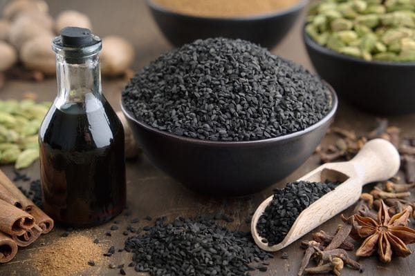

Soyuq Yağ Sıxma
100% Təbii Toxum Yağları

Qarazirə Yağı / 100% orqanik soyuq pres
🌿 Peyğəmbərimizin (s.ə.s) qara zirə haqqında sözləri:
📖 Ən məşhur hədis:
“Qara zirəni istifadə edin. Çünki onda ölümdən başqa hər dərdin dərmanı vardır.”
— (Buxari, Tibb 7; Müslim, Səlam 88)
Qiymətlər
- 250 ML - 30 AZN
- 500 ML - 55 AZN
- 1 LT - 100 AZN
🌿 Qarazirə Yağı – Ətraflı Faydaları
Qarazirə yağı (Nigella sativa) qədimdən “hər dərdin dərmanı” kimi tanınan, zəngin biokimyəvi tərkibə malik təbii bitki yağıdır. Tərkibindəki timoquinon maddəsi onun əsas müalicəvi gücünü təşkil edir.
🧬 Zəngin tərkibi
- Timoquinon – güclü antioksidant və iltihabəleyhinə maddə
- Omega-3, Omega-6 və Omega-9 yağ turşuları
- E vitamini və beta-karotin
- Fitosterollar
- Sink, dəmir, kalsium, maqnezium
🛡️ İmmunitet sisteminə təsiri
- Bədənin müdafiə mexanizmini gücləndirə bilər
- Virus və bakteriyalara qarşı müqaviməti artıra bilər
- Tez-tez xəstələnən şəxslər üçün dəstək rolunu oynayır
- Antioksidant təsiri ilə hüceyrələri qoruyur
❤️ Ürək və damar sağlamlığı
- Qan dövranını dəstəkləyə bilər
- Pis xolesterinin (LDL) azalmasına kömək edə bilər
- Damar elastikliyinin qorunmasına töhfə verə bilər
- Təzyiqin tarazlanmasında dəstək ola bilər
🍽️ Həzm sisteminə faydaları
- Mədə və bağırsaqların fəaliyyətini tənzimləyə bilər
- Köp, qaz və şişkinliyi azalda bilər
- Mədə turşusunun balanslanmasına kömək edə bilər
- Qəbizlik zamanı bağırsaq hərəkətini stimullaşdıra bilər
🦠 İltihab və ağrılar
- İltihabəleyhinə təsiri ilə oynaq ağrılarını azalda bilər
- Əzələ ağrılarında masaj üçün istifadə olunur
- Revmatik narahatlıqlarda dəstək məqsədilə tətbiq edilir
🧠 Sinir sistemi və stress
- Rahatladıcı təsir göstərə bilər
- Stress və gərginliyin azalmasına kömək edə bilər
- Yuxu keyfiyyətinin yaxşılaşmasına töhfə verə bilər
💇♀️ Saç və dəri sağlamlığı
- Saç köklərini möhkəmləndirə bilər
- Saç tökülməsinin azalmasına kömək edə bilər
- Kəpək və quruluğa qarşı istifadə olunur
- Dəridə sızanaq, qızartı və qıcıqlanmanı azalda bilər
🥄 İstifadə qaydası
- Daxilə: Gündə 1 çay qaşığı (acqarına və ya yeməkdən sonra)
- Xaricdən: Saç dərisinə və ya dəriyə masaj edərək
- Qarışıq: Bal, qatıq və ya ilıq su ilə birlikdə
⚠️ İstifadə zamanı diqqət
- Ölçüsüz istifadə tövsiyə olunmur
- Hamilə və süd verən qadınlar üçün uyğun deyil
- Xroniki xəstəliyi olanlar həkimlə məsləhətləşməlidir
- Uşaqlar üçün dozaya diqqət edilməlidir
 Instagram
Instagram